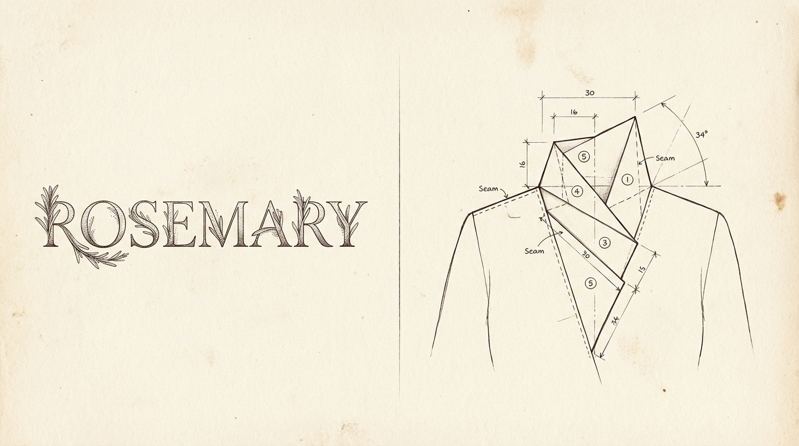
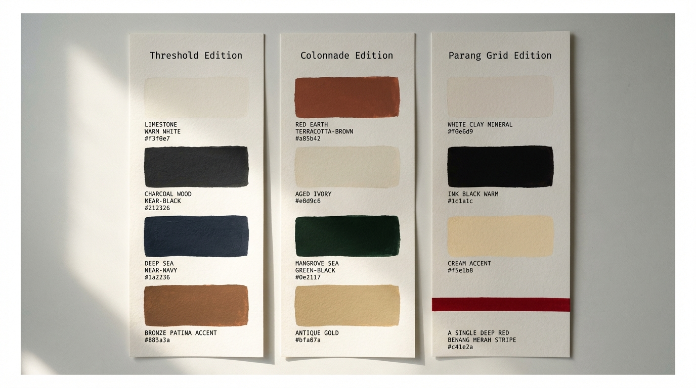
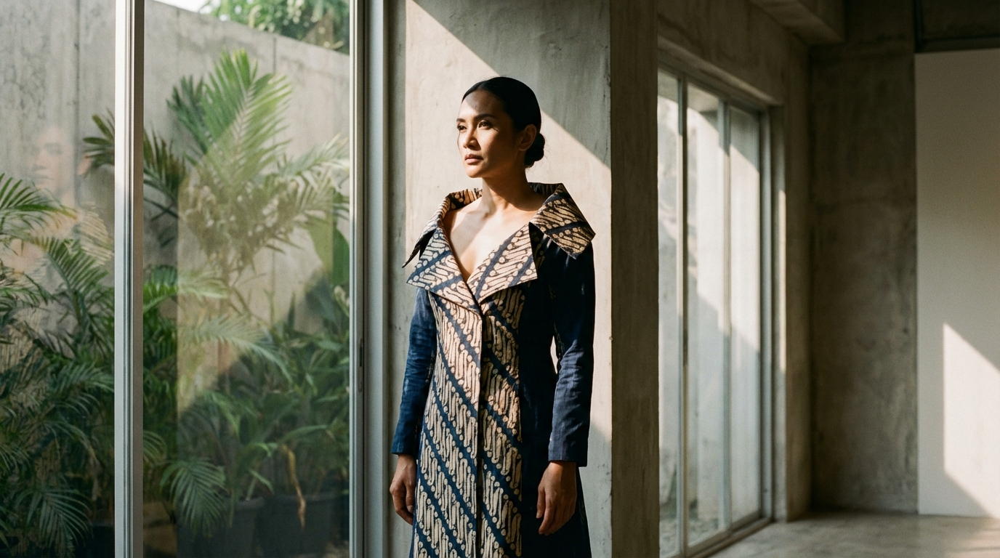

"A house is not built from the roof down. It is built from the ground up — from the name carved into the threshold, through the mathematics of the fold, to the final handwritten note placed inside the box. This document is the blueprint."
Prepared for Judy Rosemary Legoh Jakarta, March 2026
PHASE I — THE SOVEREIGN IDENTITY .............. Naming, Persona & Community
PHASE II — THE ARCHITECTURAL SIGNATURE .............. Logo, Fold & Art Direction
PHASE III — MATERIAL INTELLIGENCE .............. Fabric, Standards & the Loom Grid
PHASE IV — THE ECONOMICS OF SCARCITY .............. Pricing, Inventory & Ritual
PHASE V — THE PERMANENT HOUSE .............. Retention, Digital Strategy & Defense
APPENDIX — IMAGE GENERATION SHEET .............. 16 Prompts for Midjourney / DALL-E
Before a single thread is cut, before a fold is pressed into cloth, a house must know its own name. Phase I establishes the three pillars upon which all subsequent architecture rests: what the brand is called, who it speaks to, and how it speaks.

"Act as a High-End Brand Naming Consultant for the SE Asian 'Quiet Luxury' market. Rename 'JR Collection' (Owner: Judy Rosemary Legoh) to evoke structural innovation and heritage. Avoid 'JR' (childhood association) and 'Collection' (generic). Explore the surname 'Legoh' — its rhythmic and architectural phonetic quality. Provide 10 options across 'Atelier,' 'Abstract Heritage,' and 'Modern Matriarch' routes. Include a Brand Rationale and Visual Tagline for each."
Before any naming options are considered, a forensic analysis of the surname reveals why "Legoh" is a genuinely powerful brand asset.
| Phonetic Quality | Analysis | Brand Implication |
|---|---|---|
| "Le-" prefix | Echoes French luxury codes (Le Labo, Le Bon Marché) without being derivative | Instant elevated perception |
| "-goh" ending | Hard, clean stop — like an architectural corner. Decisive. Final. | Communicates structure & confidence |
| Syllable count | 2 syllables (Le · Goh) | Optimal for luxury branding — short enough to own, long enough to feel intentional |
| Rhythmic quality | Stress falls on the second syllable (le-GOH) | Creates natural authority — the stress lands, it closes like a signature |
| Cultural ambiguity | Sounds neither exclusively Western nor exclusively local | Perfect for SE Asian Quiet Luxury — glocal by nature |
Strategic Conclusion: "Legoh" alone can carry a luxury brand. It needs the right frame — not a descriptor, but a context word that elevates it.
Route I — Atelier ("The Hand That Makes")
| # | Name | Visual Tagline |
|---|---|---|
| 01 | Legoh Atelier | "Structure is the most intimate form of beauty." |
| 02 | Maison Legoh | "A house is built once. A style is built forever." |
| 03 | Legoh Studio | "Every fold begins as a question." |
Route II — Abstract Heritage ("Roots Made Invisible, Power Made Felt")
| # | Name | Visual Tagline |
|---|---|---|
| 04 | Rengga | "The space between structure and beauty — that is where we live." |
| 05 | Legoh Wira | "Dressed with the courage of those who came before." |
| 06 | Sulam | "Threaded with memory. Worn into the future." |
| 07 | Legoh Karsa | "Will is the first thread. Everything else follows." |
Route III — Modern Matriarch ("Her Name. Her Rules. Her Legacy.")
| # | Name | Visual Tagline |
|---|---|---|
| 08 | Rosemary Legoh | "She remembered where she came from. Then she made something new." |
| 09 | Judy Legoh | "Not a trend. A signature." |
| 10 | The Legoh | "There are many names. There is only one Legoh." |
| Priority | Name | Rationale |
|---|---|---|
| Primary | Rosemary Legoh | Timeless, earnable, tells a human story, ages into a legacy brand. The "Rosemary + Legoh" phonetic arc is genuinely beautiful. |
| Immediate Market | Legoh Atelier | Lowest barrier to consumer understanding, signals elevation immediately, practical for e-commerce and retail signage. |
| Long-Term Vision | The Legoh | If the brand commits to 3–5 years of building quality and consistency, this becomes the most powerful name in the room. |
A name is not a logo. It is the first decision your brand makes — and the one that echoes in every room your customer enters wearing your work.

"Act as a Consumer Psychologist specializing in the Indonesian 'Affluent Urban' market. Take three core personas (The Cultural Architect, The Boardroom Modernist, and The Social Curator) and define their 'Value Triggers.' Identify 3 'Style Insecurities' they have with traditional Wastra. Identify aesthetic 'cues' that signal 'High-End' vs 'Mass-Market.' Create a 'Day-in-the-Life' content map for how Rosemary Legoh fits into their daily rituals."
Profile: Age 34–48. Senior academic, museum curator, cultural NGO director. Lives in Menteng, Kemang, or Bandung's Dago area. Her wardrobe is a curated thesis, not a trend report.
Style Insecurities with Traditional Wastra:
| Insecurity | Underlying Fear |
|---|---|
| "Too Ceremonial" — fears performing heritage rather than living it | Inauthenticity in her own identity |
| "Intellectually Passive Silhouette" — standard batik outers feel structurally "quiet" | Clothing undermines professional gravitas in Western-dominated spaces |
| "Mass-Reproduced Motif" — acutely aware that her motif may be sold in 500 units at Tanah Abang | Being exposed as non-discerning by the community she leads |
High-End Signals She Reads Instantly:
Profile: Age 28–42. C-suite executive, startup founder, or senior consultant. Based in SCBD or Sudirman. Her reference points are global: she compares Jakarta to Singapore and Seoul.
Style Insecurities with Traditional Wastra:
| Insecurity | Underlying Fear |
|---|---|
| "Reads as Traditional, Not Strategic" — a batik blazer can signal "local vendor" rather than "global peer" | Being perceived as less cosmopolitan than counterparts |
| "The Kondangan Confusion" — traditional silhouettes are associated with ceremonies, not commerce | Styling choice undermines professional context |
| "Fit Without Architecture" — most Wastra outers are cut for softness, not for power dressing | Looking shapeless in high-stakes visual environments |
Her Day with Rosemary Legoh:
Profile: Age 24–38. Creative director, lifestyle content creator, brand consultant. Based in Menteng, Cipete, or Bali. Her identity is her aesthetic — and her aesthetic is her professional currency.
Style Insecurities with Traditional Wastra:
| Insecurity | Underlying Fear |
|---|---|
| "Overdone by the Algorithm" — every Wastra look has been done by 50 influencers this month | Aesthetic ordinariness in an environment where her value is aesthetic exceptionalism |
| "Narrative Poverty" — a non-exclusive piece has no story that isn't already told | Content that underperforms because it lacks a unique anchor |
| "The Costume Effect" — hyper-aware of the line between styling heritage and costuming ethnicity | Being called out by a culturally literate audience |
What Rosemary Legoh Gives Her:
| Value Trigger | Cultural Architect | Boardroom Modernist | Social Curator |
|---|---|---|---|
| Provenance | Critical — she researches it | Moderate — she uses it as context | High — it is her caption |
| The RL Fold | Intellectual artifact | Power silhouette | Photographic subject |
| Scarcity (30 units) | Validates exclusivity | Reduces risk of over-exposure | Creates urgency and FOMO content |
| Heritage Story | Core motivation | Conversation asset | Narrative infrastructure |
"Act as a Community Manager for a boutique heritage brand. Define a 'Community Voice' for Rosemary Legoh that speaks to urban Indonesian women who value 'Modern Wastra.' Provide examples of behind-the-scenes artisan storytelling, how to lead styling discussions, and how to make customers feel like 'Patrons' in an exclusive inner circle."
| Pillar | What It Is | What It Is Not |
|---|---|---|
| Informed Intimacy | Speaking like a knowledgeable friend who happens to know a master weaver | Lecturing. Condescending. |
| Quiet Confidence | Asserting the value of The RL Fold without ever defending it | Boasting. Over-explaining. |
| Cultural Reverence | Honoring the ibu-ibu artisans and their craft as the true authority | Tokenizing. Performative. |
| Selective Inclusion | Making the community feel chosen, not marketed to | FOMO manipulation. Spam. |
| Owned Word | Meaning in Context |
|---|---|
| The Fold | The RL Fold structural signature — the brand's core innovation |
| Patron | What we call our customers — never "buyer," "follower," or "customer" |
| The Inner Circle | The waitlist / VIP community |
| Wastra | Indonesian textiles — always used with reverence |
| The House | Rosemary Legoh as an institution |
| A Drop | A new collection release |
| Architectural | The design philosophy — structure-first, motif-second |
Format 1 — "The Maker's Hand" (Instagram Stories / Reels) Close-up video of artisan hands working. Natural light. No filters. The personal sign-off from "Rosemary" (not the brand account) collapses distance between founder and community.
Format 2 — "The Material Diary" (Instagram Feed Carousel) A 5-slide walk from raw material to finished piece. Slide 4 is the critical moment: "This is the moment. This is why it cannot be copied."
Format 3 — "The Origin Visit" (Reels or YouTube Shorts) Observational, not promotional. No scripted lines. Authentic reactions from the workshop visit.
Format 4 — "The Imperfection Note" (Stories or WhatsApp Broadcast) When a batch is delayed or production yields fewer pieces than planned, tell the community before they ask: "We would rather release less than release wrong. — Rosemary"
| Tier | Definition | What They Receive |
|---|---|---|
| The Waitlist | Registered interest, not yet purchased | Purchase link 24 hours before public |
| First Patron | Completed one purchase | Personal thank-you note from Rosemary |
| Returning Patron | Two or more purchases | Early preview of next collection. Direct WhatsApp access. |
| House Patron | Collector of 3+ pieces | Invited to private fittings. First right of refusal on made-to-order pieces. Named in brand archive. |
Phase II is the visual cornerstone of the House. Here, the abstract authority established in Phase I is given form — in a logotype, in a structural collar, and in a visual language that teaches the world how to see the brand.

"Act as a Creative Director. Design a logo suite for Rosemary Legoh. The aesthetic must balance Modernist Architecture with abstract Indonesian Wastra references. Deliver: 1) A Primary Logotype with 'structured' custom typography. 2) An Abstract Monogram (The Mark) for hardware and tags. 3) A minimalist 'Tanah & Laut' color palette. Provide 3 concepts with design rationales explaining the 'Architectural Signature' of each."
Two visual languages must hold each other in productive tension throughout this identity system:
| Modernist Architecture | Indonesian Wastra |
|---|---|
| Load-bearing geometry — the column, beam, threshold | Sacred geometry — kawung circles, parang diagonals, tumpal triangles |
| Swiss precision, negative space as structural logic | Hand-drawn rhythm, the human irregularity in a woven edge |
| The grid as an act of control | The loom as an act of devotion |
| Silence between elements | Story within every thread |
The mandate: find the single line where a Mies van der Rohe floor plan and a Javanese kain panjang occupy the same visual breath.
Architectural Signature: The Portal
The logotype is flanked by two vertical "portal pillars" — referencing the precise moment of transition from outside to inside in Modernist architecture, and the seret (vertical boundary line) in Javanese batik pagi-sore. The name becomes a doorway.
The Mark: Two vertical strokes joined at the base with a single descending stroke — reading simultaneously as the letter π, a loom heddle, and a threshold in plan view.
Palette — Threshold Edition:
Architectural Signature: The Colonnade
The two names are set vertically — ROSEMARY and LEGOH as parallel columns. The composition mirrors tenun ikat weaving, where warp threads run in taut vertical columns. The misaligned starting points represent columns carrying different loads.
The Mark: Two vertical strokes of unequal height on a shared horizontal base — a colonnade at its most structurally honest.
Palette — Colonnade Edition:
Architectural Signature: The Structural Bay
"ROSEMARY" is enclosed in a precise rectangular box — the structural bay. "LEGOH," set wider below, deliberately overflows the box above — the parang rusak move: the intentional break in the grid that carries the most meaning.
The Mark: An open rectangle that deliberately leaks at two calculated points. In Indonesian textile tradition, certain sacred cloths are intentionally left with an unfinished edge — the tumpal is withheld. The brand that knows when not to finish is the brand that has mastered its craft.
Palette — Parang Grid Edition:


"Act as a Fashion Historian and Structural Designer. Define the 'Anatomy of the RL Fold.' Explain how this specific asymmetric origami collar bridges Indonesian 'wiron' pleating with modernist architecture. Provide a 'Design Manifesto' that explains why this structure is a superior innovation to standard flat-pattern batik."
The Indonesian Root: Wiron as Sacred Geometry
Wiron is the precise, repetitive accordion-pleating applied to the front hem of the Javanese kain. Each pleat is equidistant, directional (always folded toward the left), and flat. The wiron is a technology of controlled repetition. It is reverence made visible. In the royal Javanese aesthetic, the wiron pleat is not decorative — it is cosmological.
The Western Root: Modernist Origami Structuralism
In 1959, Jørn Utzon won the Sydney Opera House commission with the revelation that a flat plane, when scored and rotated along a diagonal axis, creates three-dimensional form with extraordinary structural rigidity. This principle courses through Tadao Ando's concrete articulations, Zaha Hadid's parametric folds, and Issey Miyake's Pleats Please. The asymmetric fold is the most sophisticated gesture: it creates directional tension — the eye follows the fold line like a horizon.
A single, non-mirrored fold originating at the left clavicle, traveling diagonally across the neckline, and resolving at a point below the right shoulder blade — creating a continuous, sculptural plane that functions simultaneously as collar, lapel, and architectural facade.
| Zone | Name | Structural Role | Architectural Reference |
|---|---|---|---|
| 1 | The Origin | Anchor at left clavicle | Ground plane / Foundation |
| 2 | The Diagonal | Primary fold at 34° | Utzon's shell rotation axis |
| 3 | The Peak (Apex) | Highest visual point at center-neckline | The load-bearing arch |
| 4 | The Descent | Rearward travel toward right shoulder | Hadid's parametric plane |
| 5 | The Resolution | Hidden sub-scapular anchor | The cantilever — held by invisible tension |
The fold's diagonal travels at precisely 34 degrees from horizontal. At less than 30°, it reads as a soft cowl. At more than 40°, a draped sash. At 34°, the fold sits in the tectonic sweet spot: the angle at which a folded plane appears both suspended and permanent. This is the same angular logic as the pitched roof structures of Minangkabau Rumah Gadang architecture.

The Problem with Flat-Pattern Batik:
The flat-pattern batik outer is a beautiful surface without a spine.
What the RL Fold Provides:
We come from a civilization of weavers. We think like architects. We dress like neither — and both.

"Generate a high-fashion editorial photo prompt for Midjourney/DALL-E of a model in an RL Fold outer. The setting must be an 'insider' location (Jakarta art gallery). Lighting should be natural/unfiltered to maintain 'Quiet Luxury' appeal. Reference Vogue Indonesia aesthetics."
| Pillar | What It Controls |
|---|---|
| Subject | Model type, pose energy, attitude |
| Garment | RL Fold silhouette description for AI accuracy |
| Location | Jakarta insider setting, background depth |
| Lighting & Mood | Natural/unfiltered — Quiet Luxury authenticity |
Editorial fashion photograph of an Indonesian woman in her late 30s, composed and architectural in energy, wearing a structured asymmetric origami-collar outer coat in hand-dyed Javanese batik silk — deep indigo and warm ivory — the collar folds away from the neck in a single dramatic angular pleat (the RL Fold), casting a soft geometric shadow across the collarbone. She stands in a minimalist Jakarta contemporary art gallery — raw concrete walls, floor-to-ceiling glass overlooking tropical foliage. Natural afternoon sidelight, unfiltered. She holds a minimal leather clutch, no jewelry except one architectural cuff. Expression: still, knowing, undeniably present. Vogue Indonesia aesthetic. Medium-format film. Warm neutrals, desaturated shadows.
A — Gallery Interior Series:
B — Detail & Close-Up Series:
C — Environmental Storytelling:
| Setting | Source | Mood |
|---|---|---|
| Gallery Interior | Late afternoon through glass | Warm, directional, long soft shadows |
| Courtyard | Filtered canopy sunlight | Dappled, organic, high contrast texture |
| Detail Shot | Single soft source simulating window | Intimate, texture-forward |
Key Rule: No hard flash. The RL Fold must be revealed by light, not constructed by it.
"Act as a Fashion Art Director. Create a 'Photoshoot Call Sheet' for a real photographer. Define the 'Model Archetype' and 'Lighting Language' (high-contrast shadows to emphasize the fold's geometry). Provide 5 'Power Poses' that highlight the structural asymmetry for Instagram use."
The RL Fold was designed with shadow in mind. The asymmetric planes create natural ledges that catch directional light. The lighting mandate: sculpt with shadow, not illuminate uniformly.
| Setup | Type | Intent |
|---|---|---|
| "The Fold Reveal" | Single hard source at 45° left, 60° elevated. Zero fill. | The fold's ridge catches key light, casting a deep geometric shadow across the chest. The shadow draws the fold. |
| "The Silhouette Study" | Backlit diffused source behind talent. Rim light at 90°. | Full body silhouette — the fold's structural shape reads as pure line, like an architectural elevation. |
| "Close Geometry" | Macro, hard raking light at 90°. No fill. | Every stitch, every pleat ridge reads as intentional engineering. |
| # | Pose Name | Direction | Instagram Format |
|---|---|---|---|
| 1 | The Load-Bearing Wall | Stand in profile, weight shifted back, gaze out of frame. The outer cantilevered off a vertical body line. | 4:5 Portrait — HERO |
| 2 | The Cantilever | Walk at 30° toward camera, composed mid-stride. Leading arm swings forward, exposing fold's underside geometry. | 4:5 Portrait |
| 3 | The Overhang | Seated on a hard-edge surface. Back straight. Direct gaze to camera. Only pose with eye contact. | 1:1 Square |
| 4 | The Negative Space | Back to camera. Arms relaxed. Absolute stillness. Back panel's structural seam is the full subject. | 4:5 + 9:16 Story |
| 5 | The Reveal Hand | Head turned to expose fold collar. One hand at collarbone, fingertips framing the asymmetry without touching it. | 1:1 Carousel |

A design house is only as permanent as the materials it commands. Phase III establishes the fabric standards, sourcing partnerships, and quality control protocols that ensure the RL Fold is never compromised by an inferior cloth.
"Act as a Textile Sourcing Specialist in Indonesia. Develop a 'Fabric Standards Manual' for our signature outers. How do we partner with weavers in Solo or Pekalongan to create 'Exclusive Motifs'? Create a checklist for testing 'Drape and Rigidity' to ensure the Wastra can hold the structural RL Fold through multiple wearings."
"The RL Fold does not forgive an inferior cloth. The fabric is not the canvas — it is the co-architect."
The RL Fold imposes three simultaneous demands on any fabric:
Solo (Surakarta) — The Court of Structured Motifs Sogan palette, royal court motifs (parang, kawung, truntum). Cotton primissima with excellent crease memory — the primary substrate candidate for the RL Fold collar. Partners: workshops in the Laweyan or Kauman batik districts with a minimum 2-generation master weaver lineage.
Pekalongan — The Laboratory of Textile Innovation Looser, more expressive motifs. Brighter palettes. Higher innovation culture. Candidates for the cascade drape — the outer shell panel where movement is desired. Partners: workshops on the Jl. Blimbing corridor.
ATBM Woven Textiles — Tenun Troso (Jepara) and Tenun Lurik (Klaten) for interlining-free collar construction where maximum rigidity is required.

Base Fabric Qualification:
Fold Integrity Tests (on a sewn test collar):
Approved Fabric Matrix:
| Fabric Type | Source | RL Fold Application |
|---|---|---|
| Cotton Primissima (batik) | Solo | Primary fold collar structure |
| Mori Batik (fine cotton) | Pekalongan | Cascade outer panel |
| Tenun Troso | Jepara | Statement collar on non-batik line |
| ATBM Woven Silk | Pekalongan / Palembang | Evening/formal outer |
| Tenun Lurik | Klaten | Structural lining for collar |
Prohibited: Polyester blends above 20%, knit constructions, non-woven bonded textiles.
"Act as an Operations Manager for a luxury garment house. Create a 15-point Quality Control checklist specifically for The RL Fold construction. Include fabric shrinkage tests, pattern grading for oversized fits, and finish-work standards for high-end boutique retail. Define the production timeline for a 30-unit batch."
Gate 1 — Pre-Cut (Fabric Integrity)
| # | Checkpoint | Pass Standard |
|---|---|---|
| 1 | Pre-Wash Shrinkage Test | ≤3% shrinkage, warp and weft |
| 2 | Drape & Rigidity Assessment | Edge crease holds ≥10 seconds under own weight |
| 3 | Colorfastness & Lot Consistency | No visible dye transfer; no color deviation from reference swatch |
| 4 | Pattern Template Verification | Zero deviation across all 12 fold reference points vs. Master Block |
| 5 | Pattern Grading for Oversized Fit | Fold apex angle fixed at 42°±2° across all sizes |
Gate 2 — In-Construction (The Fold Execution)
| # | Checkpoint | Pass Standard |
|---|---|---|
| 6 | Interfacing Placement | Edges ≥5mm inside seam allowances; no crossing of fold crease line |
| 7 | Fold Construction Sequence | 5-step protocol: baste → press → inspect → sew → final press. No deviation. |
| 8 | Stitch Quality & Tension | 2.2mm structural; 1.8mm topstitch. No puckering, no gaping. |
| 9 | Asymmetry Verification | Right collar extends 3.5cm ± 0.3cm further than left. Most critical measurement. |
| 10 | On-Form Shoulder & Armscye Check | Fold sits flat against clavicle, apex forward, body perpendicular to floor. |
Gate 3 — Final Inspection (Finish-Work & Presentation)
| # | Checkpoint | Pass Standard |
|---|---|---|
| 11 | Edge Finishing | Hong Kong bound seams. No raw edges. Silk tape lies flat. |
| 12 | Closure Integrity | 10 open/close cycles. No thread pull, no loosening. |
| 13 | Hem Consistency | ±3mm around full circumference. Blind-stitched or hand-fell. |
| 14 | Label Placement | Centre-back neck seam. Never inside the fold. |
| 15 | Final Presentation | Steamed, photographed beside Master Reference. APPROVED or QUARANTINE. |
Any unit that fails a checkpoint is quarantined — not discounted, not sold as a second.
| Phase | Days | Activity |
|---|---|---|
| Pre-Production | 1–2 | Fabric receiving, shrinkage tests, lot documentation |
| Pattern Prep | 3 | Template verification, grading approval |
| Cutting | 4–5 | All 30 units cut and bundled |
| Basting & Interfacing | 6–7 | Interfacing fused, fold basted and pressed |
| Batch Fold Inspection | 8 | All 30 basted folds inspected before permanent sewing |
| Fold Construction | 9–11 | Permanent seaming and topstitching (max 10 units/tailor/day) |
| Asymmetry Check | 12 | Measurement logged for all 30 units |
| Assembly | 13–15 | Shoulder, side seams, armscye set, on-form inspection |
| Finishing | 16–18 | Bound seams, closures, hem work |
| Labels & Assets | 19 | Brand label and hang-tag attachment |
| Final QC | 20–21 | Steam, photograph, Master Reference comparison |
| Buffer & Corrections | 22–23 | Rework quarantined units |
| Packaging | 24–25 | Box, tissue, heritage card insertion |
| Dispatch Ready | 26 | Batch closed. Approved for release to waitlist. |
Total Lead Time: 26 Working Days (from fabric receipt to dispatch-ready)
Scarcity is not what happens when a brand runs out. It is what a brand engineers before it begins. Phase IV establishes the financial architecture, the unit allocation logic, the packaging ritual, and the waitlist psychology that transform 30 garments into 30 acts of desire.

"Act as a Boutique Business Consultant. Help me calculate a 'Premium Niche Price' for a limited run of 30 units. COGS is [C]. I need a 65% gross margin to fund high-touch service and premium packaging. How do I communicate this 'Small Batch' value to justify a designer price point?"
$$\text{Selling Price} = \frac{\text{COGS}}{1 - 0.65} = \text{COGS} \times 2.857$$
| COGS (IDR) | Min. Price (65% GM) | Prestige Price |
|---|---|---|
| Rp 800,000 | Rp 2,285,714 | Rp 2,400,000 |
| Rp 1,200,000 | Rp 3,428,571 | Rp 3,500,000 |
| Rp 1,500,000 | Rp 4,285,714 | Rp 4,400,000 |
| Rp 2,000,000 | Rp 5,714,286 | Rp 5,800,000 |
Prestige Price Rounding: Never round to the nearest clean number. A price of Rp 5,200,000 feels considered. Rp 5,000,000 feels calculated.
Recommendation: Target 68–72% gross margin, not 65%. The extra margin absorbs customs delays, fabric rework, and funds a pop-up event for the next drop.
| Line Item | Per Unit | 30-Unit Batch |
|---|---|---|
| COGS (Fabric + Labour + QC) | Rp 1,500,000 | Rp 45,000,000 |
| Packaging | Rp 150,000 | Rp 4,500,000 |
| Photography (amortised) | Rp 50,000 | Rp 1,500,000 |
| Shipping & Handling | Rp 35,000 | Rp 1,050,000 |
| Payment Gateway (3%) | Rp 132,000 | Rp 3,960,000 |
| Total Loaded Cost | Rp 1,867,000 | Rp 56,010,000 |
| Selling Price (70% GM) | Rp 5,000,000 | Rp 150,000,000 |
| Net Contribution | Rp 3,133,000 | Rp 93,990,000 |
Even at 83% sell-through (25 of 30 units), the drop remains profitable. The remaining 5 units are never discounted: they are gifted to strategic relationships, held for trunk shows, or archived.
Pillar 1 — Finite Supply as Feature, Not Apology
"Each drop is deliberately limited to 30 pieces — the maximum number the lead tailor can produce without compromising the RL Fold's structural integrity."
Pillar 2 — The COGS Story (Without Revealing the Number)
"The fabric alone — handwoven ATBM batik from Pekalongan — takes three weeks to weave for a single bolt. The RL Fold collar requires 14 individual construction steps."
Pillar 3 — The Investment Framing
"A Rosemary Legoh outer is not seasonal. The RL Fold is not a trend — it is a structural signature that has no reference in the current market. In three years, this piece will be more relevant, not less."
"Act as a Fashion Merchandiser. Create an 'Optimized Size & Volume Map' for a 30-unit small-batch drop in Indonesia. What is the ideal 'Size Curve'? How do we split units across 'Café,' 'Boardroom,' and 'Kondangan' looks to maximize 'Sold Out' psychological effects?"
| Size | Demographic % | Adjusted for RL Fold (Oversized Fit) | Units |
|---|---|---|---|
| S | 18% | 22% (size-down effect) | 7 |
| M | 34% | 40% (largest active demographic) | 12 |
| L | 30% | 26% (size-down reduces demand) | 8 |
| XL | 18% | 14% | 3 |
Final Size Curve: 7 – 12 – 8 – 3
| Look | Units | Strategic Role | Size Split |
|---|---|---|---|
| Kondangan | 12 (40%) | First to sell out — creates urgency signal | S:2 M:5 L:4 XL:1 |
| Boardroom | 11 (37%) | Second wave — validates professional prestige | S:3 M:5 L:2 XL:1 |
| Café | 7 (23%) | Final clearance — closes the drop story | S:2 M:2 L:2 XL:1 |
Hour 0–24: Kondangan Wave — Drop link sent via WhatsApp. Only Kondangan imagery shown. Target: complete sell-out by Hour 24.
Hour 24–48: Boardroom Wave — "Kondangan is gone. Boardroom is now open." Show the RL Fold collar detail in video — the Boardroom buyer's primary decision point.
Hour 48–72: Café Wave — Warmer, more editorial tone. "Only the Café edition remains. 7 pieces. This is the final chapter of Drop 01."
The Closing Ritual: When the final unit sells, post a single dark image with white text: "Drop 01. 30 Pieces. 72 Hours. It's done."

"Act as a Luxury Packaging Designer. Create a 'Signature Unboxing Experience' for Rosemary Legoh. Suggest sustainable but premium materials. Design the 'Heritage Note' — a small card explaining the RL Fold story. How can we make the physical arrival a 'social media-worthy' moment?"
"The garment enters the world twice: once when it is made, and once when it is received. The second birth must be as intentional as the first."
The Outer Vessel — "The Gedung Box" Rigid two-piece lift-off box. 38cm × 38cm × 12cm. 3mm greyboard wrapped in Kraft-linen laminate — resembling architectural concrete. Single debossed wordmark on lid: ROSEMARY LEGOH. No foil, no color. Inner lining: natural undyed cotton muslin from the same Solo cooperatives that supply garment fabric.
The Three-Stage Interior Reveal:
Stage 1 — The Sealing Band: A 12cm band of handwoven Lurik fabric in Tanah (warm off-white) and Laut (deep ocean indigo), tied in a flat knot directly above the RL Fold. Repurposable as a bookmark, hair tie, or gift ribbon.
Stage 2 — The Garment Layer: Folded with the RL Fold collar face-up at the top, centered. No plastic polybag. The fold is the first visual element revealed.
Stage 3 — The Foundation Layer: The Heritage Note and the Wax Seal Card rest beneath the garment.
10cm × 15cm. 300 gsm stone paper. Letterpress monogram in warm indigo.
Inside Left Panel — The Garment Identity: Piece Number [XX / 30], Collection, Colorway, Fabric Origin, Artisan Name, Date of Completion.
Inside Right Panel — The RL Fold Story:
"The fold you are holding was made by hand. It draws from two traditions: the wiron pleat of Javanese court dress and the structural origami logic of modernist architecture. The RL Fold bridges these two intelligences. It is asymmetric by design: one side rises, the other falls. It cannot be sewn by machine. This is not decoration. This is your garment's architecture. — Rosemary Legoh"
Hand-applied deep indigo wax seal bearing The Mark. Below: handwritten in ink — "Piece [XX] of [30] — Thank you for being part of this circle. — Rosemary"

| Peak | Action | Visual Hook |
|---|---|---|
| Peak 1 — The Lift | Removing outer mailer, revealing the box | Debossed wordmark catches oblique light |
| Peak 2 — The Untie | Untying the Lurik band | Color story of Tanah and Laut; the RL Fold collar emerges |
| Peak 3 — The Note | Opening the Heritage Note | Letterpress monogram, stone paper, handwritten wax seal |
Scent Trigger: A single drop of gaharu (agarwood) and white sandalwood oil on the inner mailer flap. The customer smells the brand before she sees the box.
"Design a 'Waitlist' strategy for the next drop. How do I use Instagram Stories to tease The RL Fold detail gradually? Provide a 7-day content calendar leading up to the moment the 'Purchase Link' is sent exclusively to the waitlist to create a digital queue."
Every day of the 7-day sequence increases desire. The purchase link resolves that tension for the chosen few on the waitlist.
| Day | Concept | Key Content | CTA |
|---|---|---|---|
| 1 — The Absence | Say nothing finished. Create a vacuum. | Workspace close-up. "Something is being built." | None. Restraint is the message. |
| 2 — The Material | Introduce the fabric. Make it feel rare. | Macro weave close-up. "Sourced. Not mass-ordered." | None. Let curiosity compound. |
| 3 — The Question | Introduce the RL Fold concept without showing it. | "There is a fold at the collar that can't be pressed flat." Poll sticker. | First CTA: Waitlist link. |
| 4 — The Hand | Show human skill. Humanize the construction. | Tailor's hands folding the collar. "11 independent alignment points. Each by hand." | "Waitlist closes in 3 days. 30 units only." |
| 5 — The Silhouette | First glimpse — in shadow only. | Backlit model silhouette. Details are gated behind the waitlist. Countdown sticker. | Link sticker on every Story. |
| 6 — Social Proof | Visible demand. Others are moving. | "126 women registered. 30 units exist." Final call: "Closes tonight at 11:59 PM." | Final link everywhere. Update bio. |
| 7 — The Release | Reward the waitlist. Make the public witness. | WhatsApp broadcast at 9AM. Stories sold-counter updates throughout the day. | "The link has been sent." |
"Good morning, [Name]. You are in the Inner Circle. The RL Fold — [Drop Name] — is now open for you. 30 units. Your access closes at 6:00 PM. [Purchase Link] — Rosemary"
Signed with Rosemary's name. Not "The Team."
A drop sells in hours. A house lasts for decades. Phase V builds the systems that transform a successful first sale into a permanent institution — through strategic influence, loyalty architecture, digital precision, competitive intelligence, and the disciplined practice of stress-testing every assumption.

"Draft a 'Collab Proposal' for 5 micro-influencers (10k–50k followers) in the 'Wastra/Modest' niche. Focus on the RL Fold as a design innovation. Offer 'Early Access' and ask for 'Style Reviews' rather than paid ads. Create a 'Cluster Effect' within this specific urban sub-culture."
Five carefully selected voices are invited to be among the first to wear and experience the RL Fold. The ask: an honest Style Review. No brief. No hashtag requirements.
| # | Profile | Follower Range | Why They Matter |
|---|---|---|---|
| 1 | The Wastra Intellectual | 25k–45k | Audience is pre-educated. Her review carries academic credibility. |
| 2 | The Boardroom Modest Style Creator | 20k–40k | Her audience are Rosemary Legoh's buyers. |
| 3 | The Kondangan Curator | 15k–35k | The RL Fold as a kondangan outer is a disruptor. |
| 4 | The Jakarta Art Scene Insider | 10k–25k | Her audience does not follow trends — they set them. |
| 5 | The Diaspora Modernist | 12k–30k | International reach gives aspirational gravity. |
"I'm Rosemary Legoh, a designer working in Jakarta. My signature is the RL Fold: an asymmetric collar construction built at the intersection of Javanese wiron pleating and modernist architecture. I am preparing a small drop of 30 pieces — and before any public announcement, I'm offering 5 people the chance to receive a piece early. No brief. No paid partnership. If it moves you, write about it in your own words. If it doesn't, no obligation. — Rosemary"
| Day | Action | Effect |
|---|---|---|
| 1 | Wastra Intellectual receives piece, posts teaser | Seeds intellectual curiosity |
| 3 | Art Scene Insider wears to event, posts candid | Street-level credibility |
| 5 | Boardroom Creator posts full review | Professional authority validates |
| 7 | Kondangan Curator posts teaser | Celebration niche activated |
| 9 | Diaspora Modernist posts from abroad | International legitimacy spike |
| 10 | Waitlist link drops | Audience primed by 5 trusted voices |
"Design a VIP Post-Purchase Experience. Message 1: The textile story. Message 2 (10 days): Request for a 'Style Selfie' for our community wall. Message 3 (30 days): A 'First Look' invite to the next drop. How can we make the follow-up feel like a personal gift from the designer?"
Message 1 — "The Story Behind What You Now Own" Timing: 24–48 hours after delivery. Channel: WhatsApp personal message.
"Rosemary di sini. What you are holding is not just fabric and structure — it carries something older. The outer you received uses [specific Wastra] — a cloth hand-woven in [region] for generations. The RL Fold at the collar honours the wiron — reinterpreted for structure and movement. When you wear it, that history moves with you. — Rosemary"
No CTA, no link, no discount code. The message asks for nothing. Personalised with her name, her specific Wastra type, and her region.
Message 2 — "We'd Love to See How You Wear It" Timing: 10 days after delivery. Channel: WhatsApp or Instagram DM.
"We are building a community wall: a real-life gallery of how women across Indonesia are interpreting the RL Fold. No professional lighting required. We want the Tuesday morning version. You decide if it stays private or if we share it with credit to you."
Response protocol: reply to every submission within 2 hours with a personal, specific compliment.
Message 3 — "You Hear It First" Timing: 30 days after delivery. Channel: WhatsApp.
"I don't send this to everyone. Next month, we are releasing the next small batch. I'm not announcing it publicly yet. But you were one of our first. That means you get to see it before anyone else. — Rosemary"
Every message must pass four checks:
"Act as a UI/UX Designer for luxury e-commerce. Outline the 'User Journey' from Instagram to WhatsApp or Website. How should the 'Product Page' be structured to explain the 'Architectural Fold' using video? Design the 'Scarcity UI.'"
| Stage | Platform | User Mindset | Design Principle |
|---|---|---|---|
| Discovery | Browsing, not shopping | The Prestige Window — cinematic, no overt CTA | |
| Interest | Instagram → WhatsApp / Website | Curious, evaluating | The Velvet Rope — friction is intentional |
| Consideration | Website Product Page | Evaluating worth at the price point | The Exhibition Space |
| Conversion | WhatsApp or Website Cart | Ready to commit | Concierge intimacy + streamlined checkout |
| Retention | WhatsApp personal messages | Post-purchase | The three-message retention loop |
[ Reserve via WhatsApp ]. Secondary: [ Add to Cart ]. Tertiary (at zero): [ Join Waitlist for Next Drop ].| Inventory Level | Display | Visual Treatment |
|---|---|---|
| 30–16 pieces | No count shown | Silence builds normalcy |
| 15–6 pieces | Neutral grey, small font | |
| 5–3 pieces | Amber dot + italic | |
| 2 pieces | "Final 2 pieces" | Red dot + bold |
| 1 piece | "Last piece — reserved 24 hours upon inquiry" | Red dot + border highlight |
| 0 pieces | Archive Entry | CTA becomes "Join Waitlist for Drop 03" |
No countdown timers. Timers are mass-market psychology. Rosemary Legoh uses unit scarcity, not time scarcity.
Archive Pages (Sold Out State): The product page transforms — hero image remains, copy changes to "All 30 pieces found their homes." Fold video remains as permanent brand content. Builds social proof over time.

"Act as a Market Intelligence Analyst. Perform a 'Competitive Gap Analysis' between Rosemary Legoh and top-tier Indonesian Wastra brands (Sejauh Mata Memandang, BINhouse). Identify the 'White Space' where Rosemary Legoh can win via 'Structural Innovation.'"
HIGH STRUCTURE / ARCHITECTURAL
↑
|
[ROSEMARY LEGOH] |
Heritage ───────────────────┼────────────────────→ Contemporary
[BINhouse] | [Sejauh Mata Memandang]
|
LOW STRUCTURE / SURFACE PATTERN
BINhouse: Heritage + Low Structure. Revered for fabric purity, but tailoring remains conservative. Inaccessible to the urban professional woman aged 30–45.
Sejauh Mata Memandang: Contemporary + Low Structure. Strong on prints and storytelling, but garments rely on print as primary differentiator. No proprietary construction.
Rosemary Legoh: Heritage + High Structure. Currently unclaimed by any dominant brand.
| Dimension | SMM | BINhouse | Toton | Biyan | Rosemary Legoh |
|---|---|---|---|---|---|
| Structural Signature | ✗ | ✗ | ◐ | ◐ | ✓ |
| Heritage Textile | ✓ | ✓ | ◐ | ✗ | ✓ |
| Boardroom Wearability | ◐ | ✗ | ✓ | ✗ | ✓ |
| Modern Urban 30–45yo | ✓ | ✗ | ✓ | ✗ | ✓ |
| Drop Model / Waitlist | ✗ | ◐ | ✗ | ✗ | ✓ |
| "Unfoldable" Barrier | ✗ | ✗ | ✗ | ✗ | ✓ |
"Act as a panel of three experts: a Jakarta Luxury Retail Veteran, a TikTok Viral Strategist, and a Bandung Textile Specialist. Identify 5 reasons this strategy could fail in 12 months. Address the 'Tanah Abang' copycat effect, 'Aesthetic Fatigue' of the fold, and the reality of VIP service at scale. Be brutal; find the weaknesses so I can build a defense."
Risk: CRITICAL | Timeline: 3–6 months post-viral drop
A buyer from Tanah Abang photographs the product, takes it to a cutting room, and within one production cycle you compete against a Rp 450,000 version. The structural complexity of the RL Fold is not sufficient protection alone — experienced pattern-makers can reverse-engineer it in two days.
Defense:
Risk: HIGH | Timeline: 9–14 months
Every signature element has an entropy clock. Month 1–3: Discovery. Month 4–7: Recognition. Month 8–11: Familiarity. Month 12+: Detachment.
Defense:
Risk: HIGH | Timeline: After 50+ cumulative customers
By customer 45, you are copying and pasting from a template. By customer 120, the "personal note" is a scheduled broadcast. Your VIP customers will notice.
Defense:
Risk: MEDIUM-HIGH | Timeline: 6–18 months (market-level)
Within 18 months, every boutique Indonesian brand will use the same language. When every brand is whispering, none can be heard.
Defense:
Risk: MEDIUM | Timeline: Ongoing, critical at 18–24 months
Rosemary Legoh is currently a personality, not yet an institution. What happens during illness, controversy, or scale beyond personal touch?
Defense:
| Risk Vector | Likelihood (12mo) | Current Defense |
|---|---|---|
| Tanah Abang Copycat | Very High | Weak — no IP registered |
| Aesthetic Fatigue | High | Moderate — needs content discipline |
| VIP Service Scale | High | Weak — no systems designed |
| Quiet Luxury Saturation | Medium | Moderate — needs differentiation speed |
| Founder Dependency | Medium | Weak — brand not yet systematized |
"The fold is the first sentence. The house is the entire book. This document is the architecture between them."
BUILDING A FASHION HOUSE: ROSEMARY LEGOH Prepared March 2026